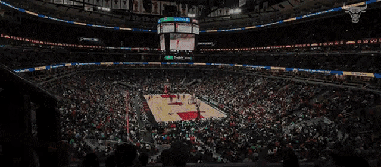

The away side feels different from the beginning. The court is unfamiliar, the crowd is louder, and nothing feels completely under your control. Having to deal with the loud capacity from the home side crowd. But sometimes growth begins when you step into a place that does not already know who you are.